This page contains showcase of projects, code packages, scripts and other resources that may be of use to people working in healthcare or related services.
Want to suggest an addition to this page? Head to our contributor guide to find out more - coding entirely optional.
Please note that inclusion of a tool on this site does not imply that the HSMA team, NIHR, or any other Atlas contributors, have reviewed these tools in detail. This resource is designed to act as a signpost to the work that is out there, and provide a high-level indication of the health of any given project, but you should always conduct your own reviews of the suitability of any of these tools and techniques for your own use case.
Inclusion of a tool on this page also does not indicate endorsement of the tool author of the HSMA programme, NIHR, the Atlas, or the description written of the tool.
If you have any concerns, or would like any content to be removed, please raise an issue on the repository.
indicates a project, package or tool has been written by a team in the NHS, public health England, or a similar organisation
indicates a project, package or tool has been written by academics, though often they will be working in partnership with NHS organisations in some manner
Entries without an icon are general-purpose tools used more widely for analytics or data science.
| Status | Description |
|---|---|
| Bronze | A script, tool or package with limited documentation and/or that may need significant reworking to be reused. This may also be used to denote a project at an earlier stage of development, or which may no longer be maintained/receiving updates. |
| Silver | Either
However, compared to a ‘gold’ ranked project, these projects may be more limited in terms of automated tests, documentation, or may have limited adoption or maintenance. |
| Gold | Either
All would be expected to have extensive tests, clear documentation, and be well-established projects that are actively maintained. |
Python
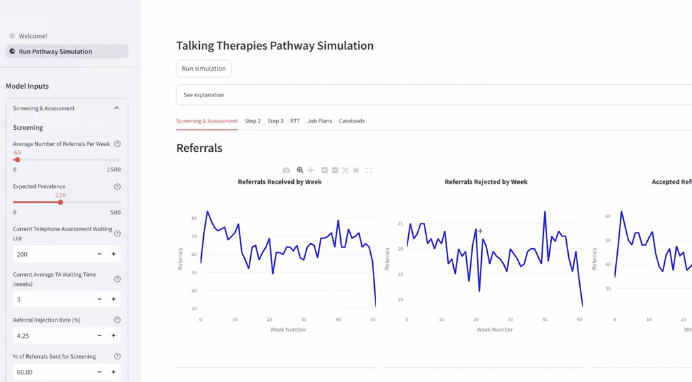
DES modelling flow of children and young people through an ADHD diagnostic pathway, with streamlit web app.
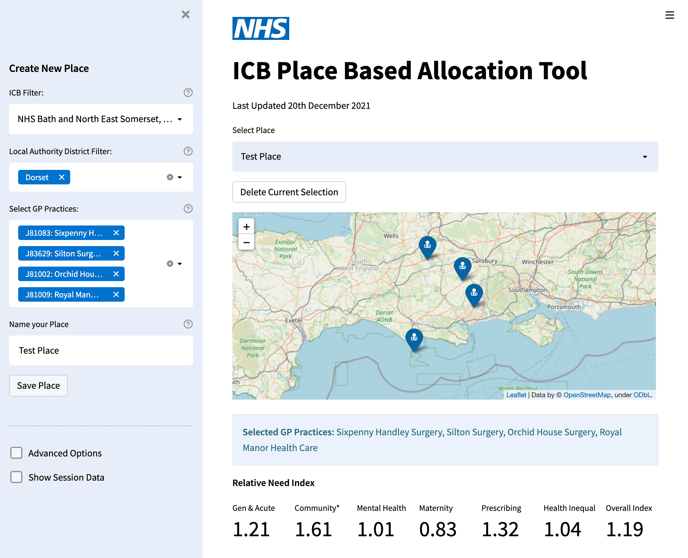
Python tool to assist Integrated Care Boards (ICBs) to perform need based allocation based on defined place. A 'place' is defined within an ICB as a cluster of GP practices. Relative need indices are then calculated and output as a csv.
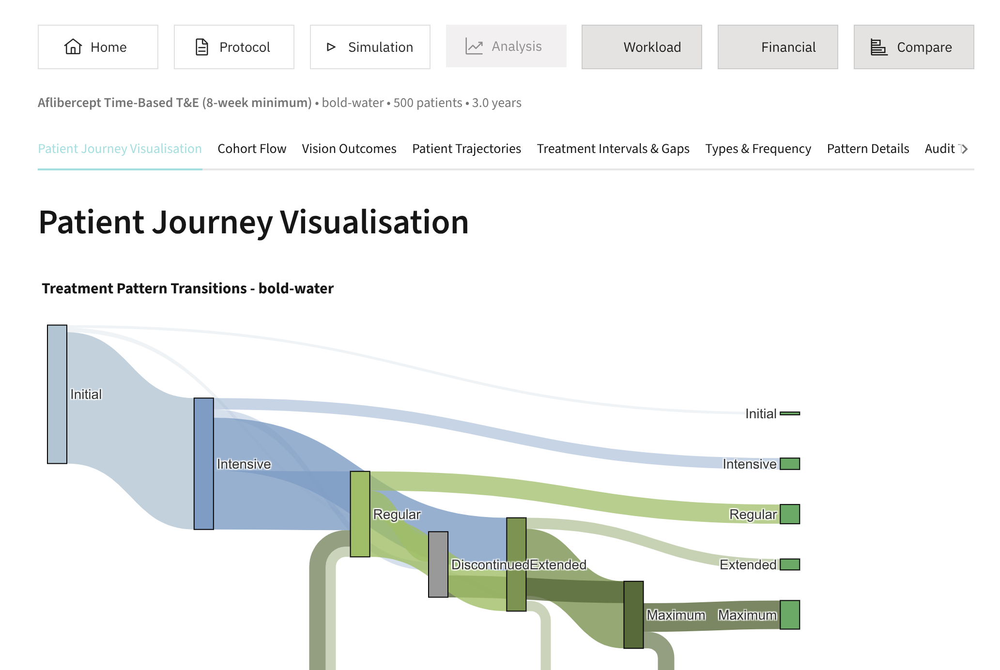
DES of opthalmology pathways, allowing the exploration of the impact of different anti-VEGF treatment strategies on patients and costs.
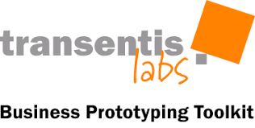
BPTK-Py is used for the creation of System Dynamics and agent-based simulation models, providing a code-based way of structuring, experimenting with and reproducing these models. These kinds of models are helpful for understanding how complex healthcare systems may react to changes, with system dynamics excelling at 'big picture' modelling of groups and their flows through systems, and agent-based simulation excelling at looking at the overall outcomes arising from the behaviour of individuals.
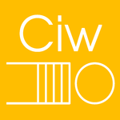
Ciw is a discrete event simulation (DES) library. It is helpful for building simulations of pathways and services, allowing 'what-if' questions to be tested. Rather than being a general-purpose DES framework like SimPy, Ciw involves defining key elements of your queuing network, and can be a quicker approach for more straightforward models as you don't have to write so much of the logic from scratch.
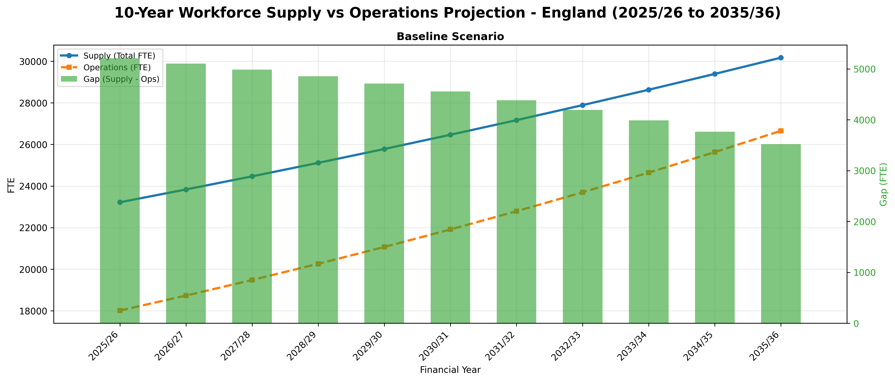
Workforce projection model to support NHS workforce planning for community pharmacy services, with a focus on pharmacists and pharmacy technicians. Using entirely open data (Community Pharmacy Workforce Survey, GPhC registers data and NHSBA Consolidated Pharmaceutical List), it generates workforce projects and gap analysis visualisations for different scenarios.
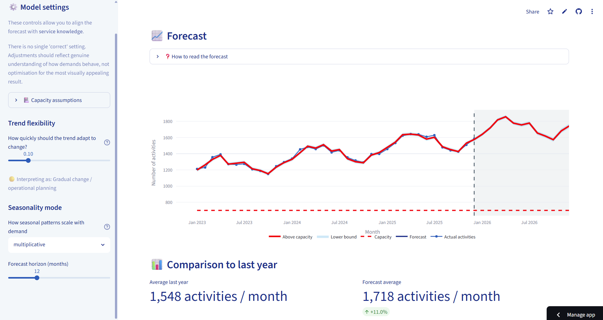
This flexible tool uses the Facebook Prophet time series forecasting model to generate forward projections of demand, providing a simple way to turn historical activity data into actionable insights for planning. Intuitive visualisations and narrative summaries highlight trends, seasonal patterns, and uncertainty. The tool also supports capacity-aware analysis by comparing projected demand against service limits, allowing identification of potential pressure points, quantification of gaps between demand and capacity, and exploration of how changes in assumptions may affect outcomes. Results can be exported as a shareable report.
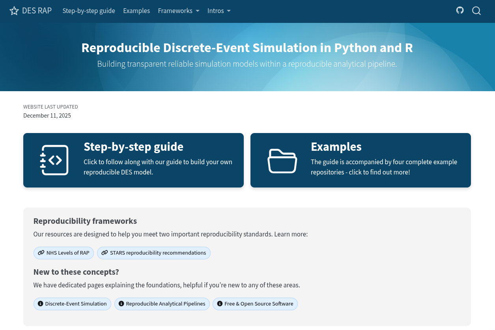
DES RAP Book is an open resource and website for building discrete-event simulation (DES) models within a reproducible analytical pipeline (RAP), supporting the healthcare simulation community. DES models are often used for building simulations of pathways and services, allowing 'what-if' questions to be tested. The resource demonstrates practical, code-based workflows and tools to help researchers and practitioners develop, validate, and share DES models in Python (SimPy) and R (simmer), ensuring models are reproducible.
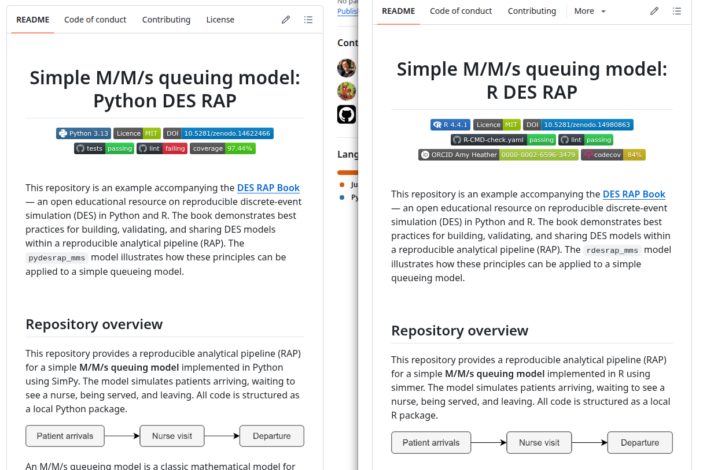
Two equivalent repositories implementing a simple M/M/s queueing model - one using Python (SimPy) and one using R (simmer).
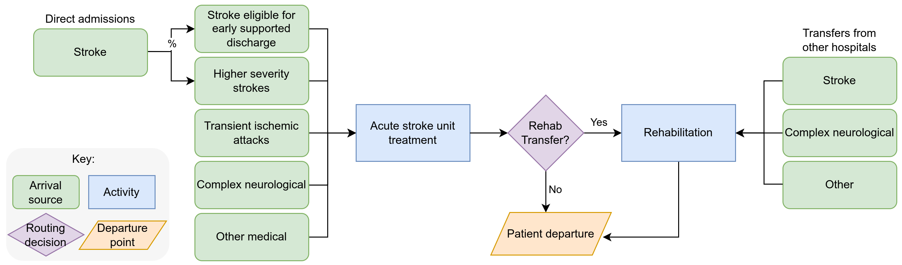
Two equivalent repositories implementing a stroke capacity planning model - one using Python (SimPy) and one using R (simmer).
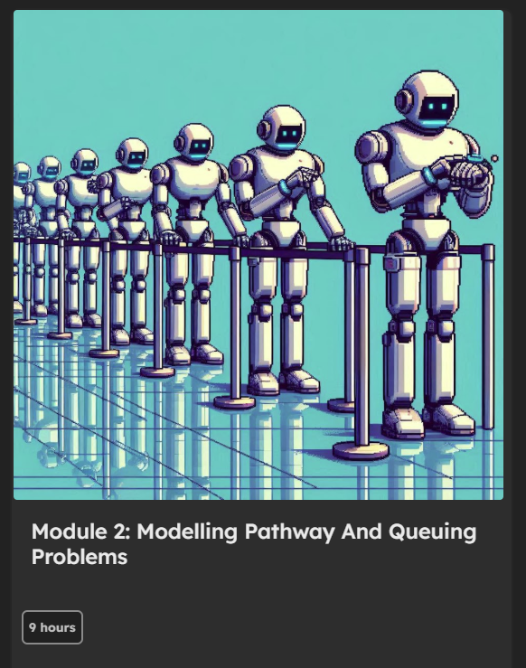
This is a collection of slides, session recordings, code examples, exercises, exercise solutions and solution videos from the discrete event simulation (DES) module of the Health Service Modelling Associates Programme, covering 9 hours of content. It teaches discrete event simulation with the Python SimPy package, assuming no prior knowledge of the package or DES concepts. DES is helpful for building simulations of pathways and services, allowing 'what-if' questions to be tested.
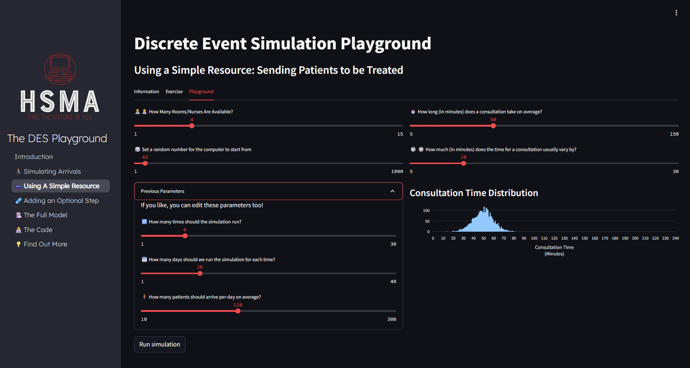
The Discrete Event Simulation (DES) playground is an interactive web application designed to teach the fundamental concepts of DES to absolute beginners. Used to support a range of training sessions, it can also be used as a standalone tool to introduce yourself to why DES is useful, building up from a very simple to a more complex model and allowing you to explore the impact of changing a range of parameters. DES is used for building simulations of pathways and services, allowing 'what-if' questions to be tested.
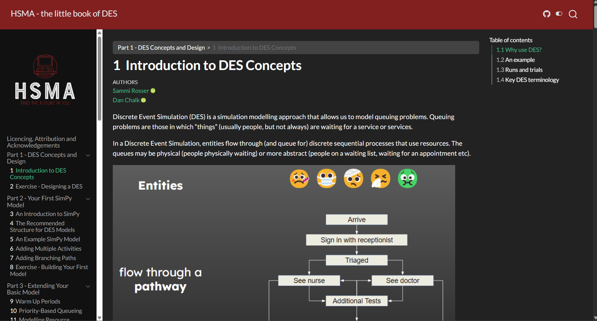
The Little Book of Discrete Event Simulation (DES) is a free eBook written to accompany the DES module of the Health Service Modelling Associates (HSMA) programme. DES is a technique used for building simulations of pathways and services, allowing 'what-if' questions to be tested. The book takes you from being a complete beginner in DES through to creating complex models with a web interface. This Python resource primarily focusses on the SimPy package, also touching on Streamlit and various supporting packages.
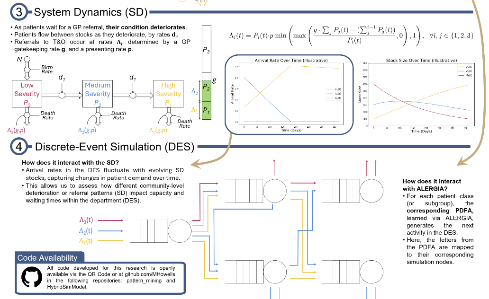
This is a hybrid simulation model for a trauma and orthopaedics department. This combines system dynamics to model patient deterioration while waiting for a General Practitioner (GP) referral in Primary Care, and a discrete event simulation (DES) to model the patient journey through an Orthopaedic department.
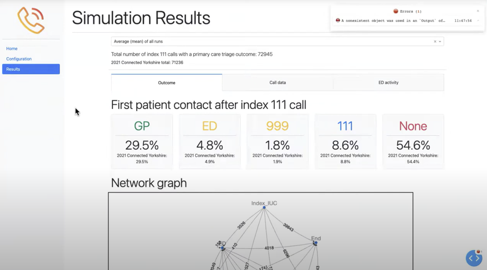
SimPy discrete-event simulation that models how ensuring timely primary care contact for patients triaged by NHS 111 could change subsequent use of 999, Emergency Departments, and inpatient services.
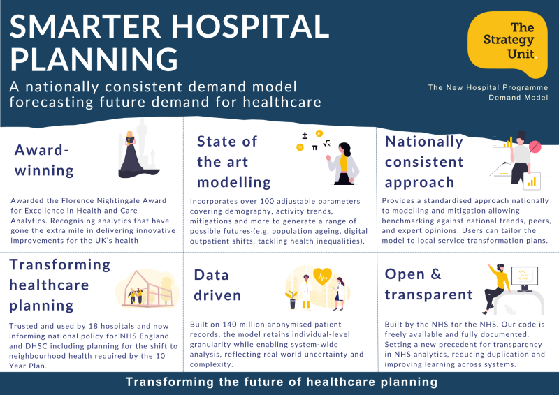
The Demand and Capacity Modelling Tool, developed by the Strategy Unit for DHSC and its partners, supports robust and transparent forecasting of future hospital activity to inform the design and scaling of over 40 new hospitals planned by 2030.
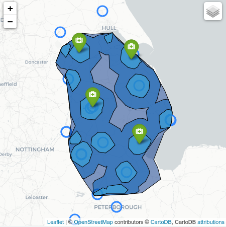
Initial proof of concept and exploratory analysis for the design of a holistic and interactive mapping tool to support decision-making in health and social care. It provides code that could be adapted for walking time to GP practices in a city, driving time between GP practices and hospitals in busy cities in the absence of traffic-aware routing data, and isochrone (maps showing the areas reachable from a point within a specified time) generation.
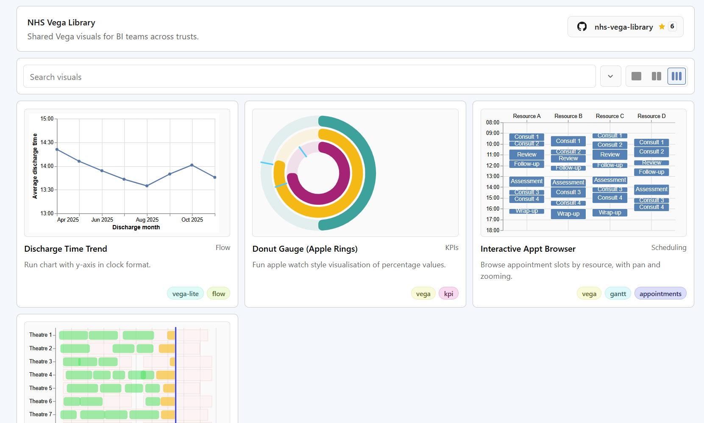
A library of healthcare-specific data visualisations, developed in Vega. Hyper customisable interactive charts and widgets that you own, which can be implemented in Power BI using Deneb, or Python using Altair.
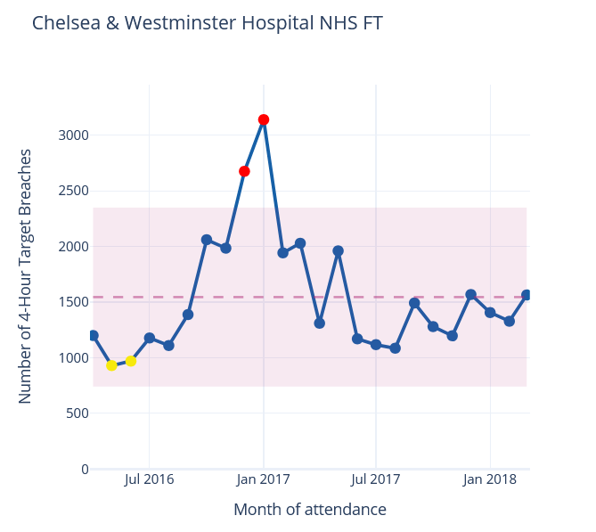
NHSpy-plotthedots is a Python port of the NHSRplotthedots package that simplifies the creation and automation of statistical process control (SPC) charts for KPIs. It helps analysts and teams move beyond static KPIs to understand true performance variation and identify opportunities for improvement.
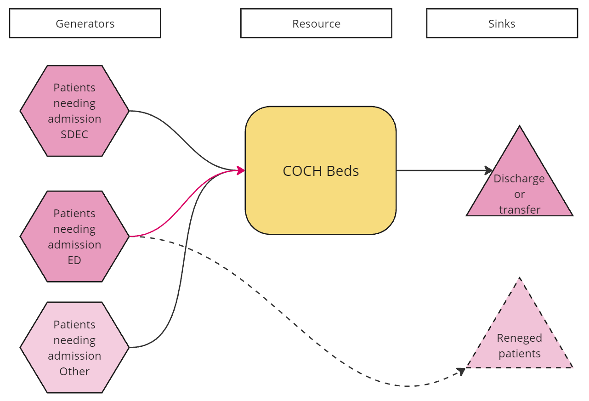
A Python discrete event simulation and Streamlit app that models non‑elective inpatient flow to assess how bed capacity, length of stay and Same Day Emergency Care affects Emergency Department waiting times.
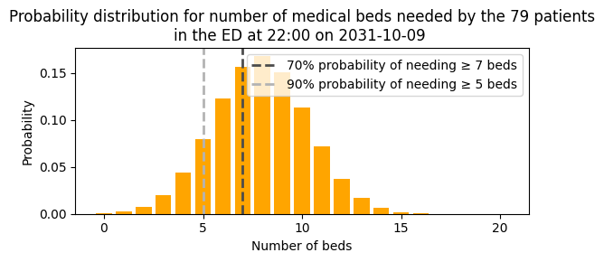
PatientFlow is a Python package for real-time short-term predictions of hospital bed demand. It uses snapshots of current in-hospital patients as well as expected future arrivals, converts patient-level predictions into aggregated group-level bed-count forecasts, and delivers actionable outputs for bed managers, such as a likely range of the number of beds needed in the next 8 hours for a given specialty. The package is designed for operational, short-term use as opposed to long-term strategic planning.
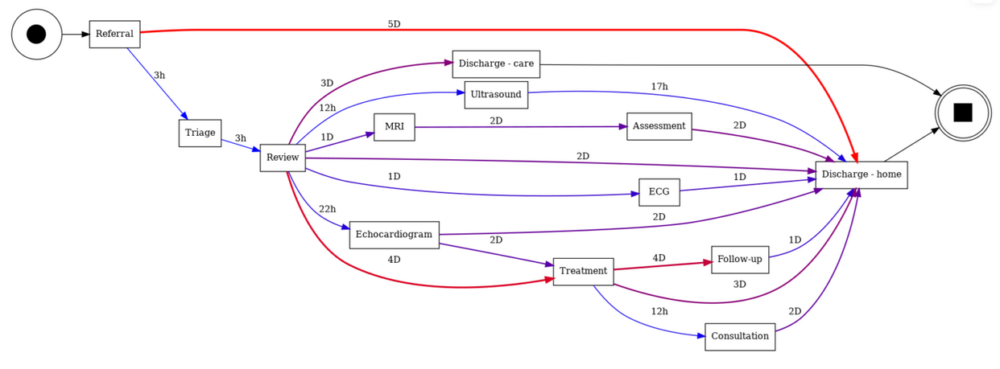
pm4py is a Python library for process mining that helps healthcare analysts explore how patient pathways, test result flows, and other clinical processes actually unfold. By turning event data into visual process maps, it highlights delays, rework, and variations that can guide service improvement.
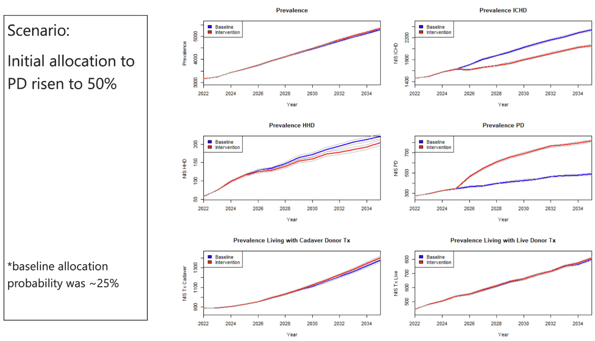
A SimPy discrete event simulation model, used as part of a hybrid modelling approach for investigating interventions in renal care.
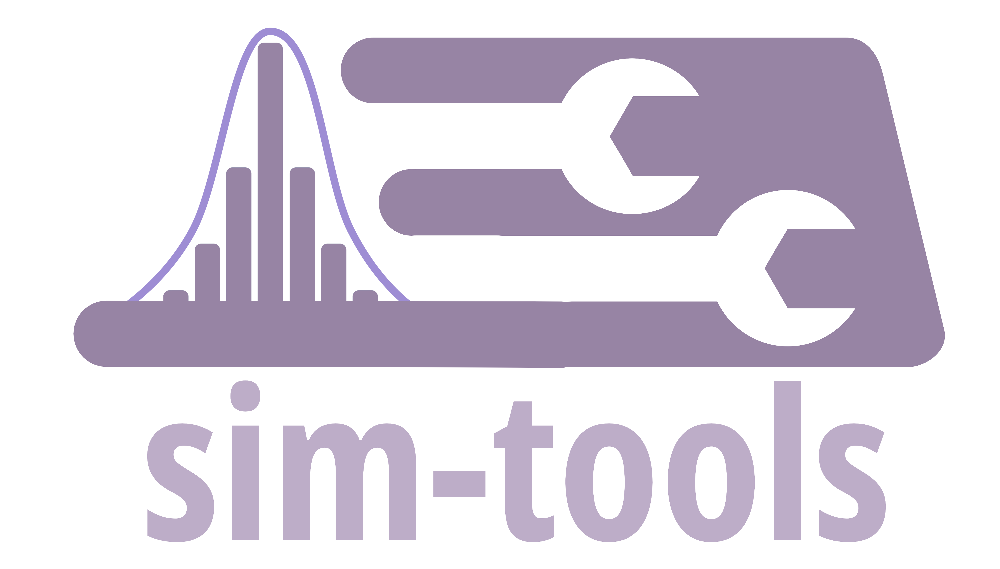
Tools to support Discrete-Event Simulation (DES) and Monte-Carlo Simulation education and practice.
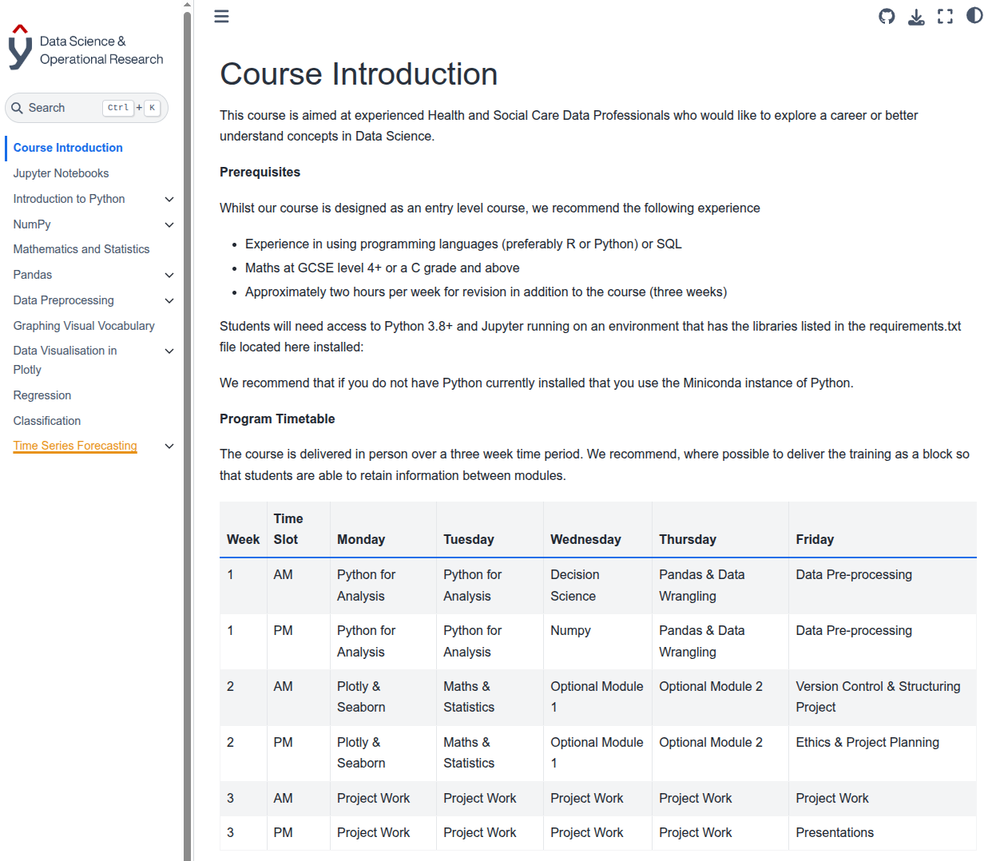
Data science course aimed at experienced Health and Social Care Data Professionals.
Wait list simulation framework in development by the Somerset NHS FT DS & Improvement team.
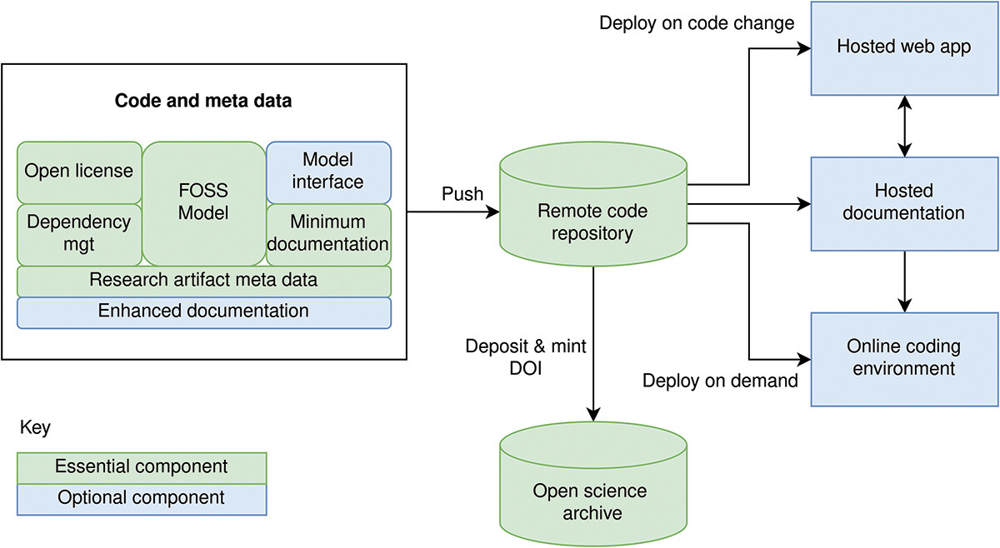
Three examples of discrete-event simulation models implementing the STARS Reusability Framework. This includes simulation models (SimPy, ciw), web apps (streamlit, shiny) and documentation.
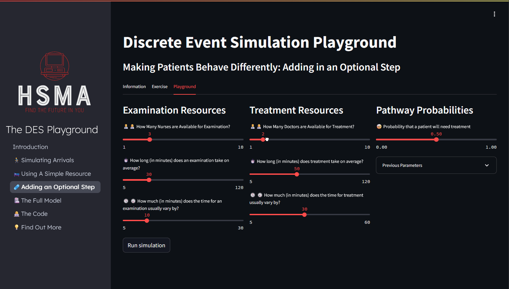
Streamlit is a beginner-friendly framework for creating interactive web applications in Python. It is suitable for both dashboard-style interactive tools, as well as interactive graphical interfaces to tools that can be a great way for non-coders to interact with models. With simple sequntial execution and a low barrier to entry, writing your first Streamlit app takes minutes.

Vidigi is an animation library for showing patient flows and bottlenecks in simulations and for historical simulation logs.
R
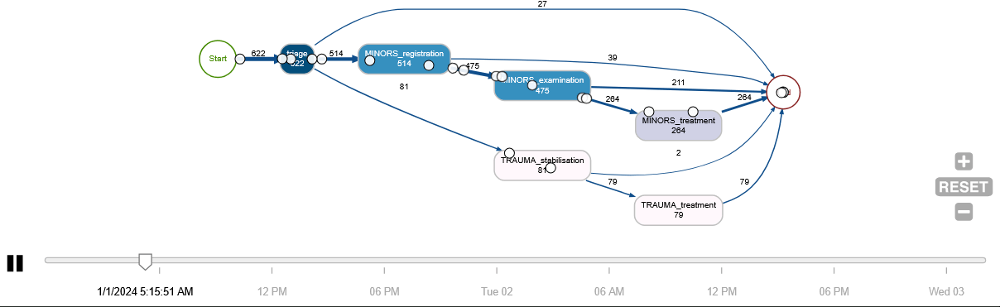
bupaR (and associated packages across the bupaverse) are libraries for process mining that helps healthcare analysts explore how patient pathways, test result flows, and other clinical processes actually unfold. By turning event data into visual - even animated - process maps and other compelling visuals, it highlights delays, rework, and variations that can guide service improvement.
DES RAP Book is an open resource and website for building discrete-event simulation (DES) models within a reproducible analytical pipeline (RAP), supporting the healthcare simulation community. DES models are often used for building simulations of pathways and services, allowing 'what-if' questions to be tested. The resource demonstrates practical, code-based workflows and tools to help researchers and practitioners develop, validate, and share DES models in Python (SimPy) and R (simmer), ensuring models are reproducible.
Two equivalent repositories implementing a simple M/M/s queueing model - one using Python (SimPy) and one using R (simmer).
Two equivalent repositories implementing a stroke capacity planning model - one using Python (SimPy) and one using R (simmer).
R package (built using C++ and Rcpp) implementing the definition of 'avoidable' emergency department attendances, as per the School of Health and Related Research at the University of Sheffield's definition, with reference to NHS Digital's SNOMED/HES coding.
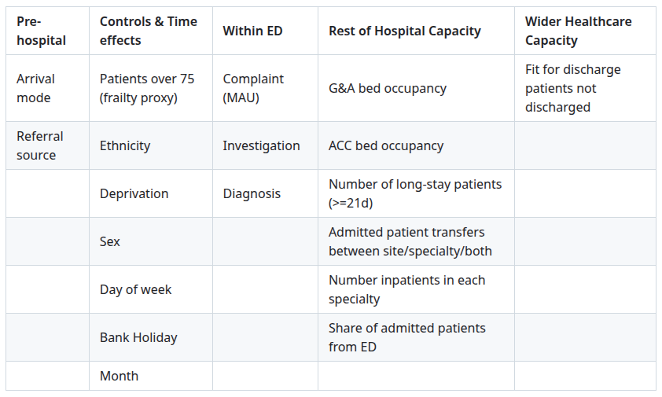
An R Package that uses routinely collected data to explore factors impacting emergency department crowding.
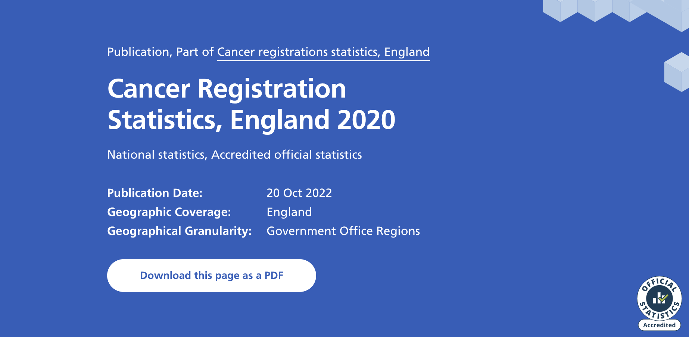
RAP code used for the Cancer Registration Statistics for England in 2020.
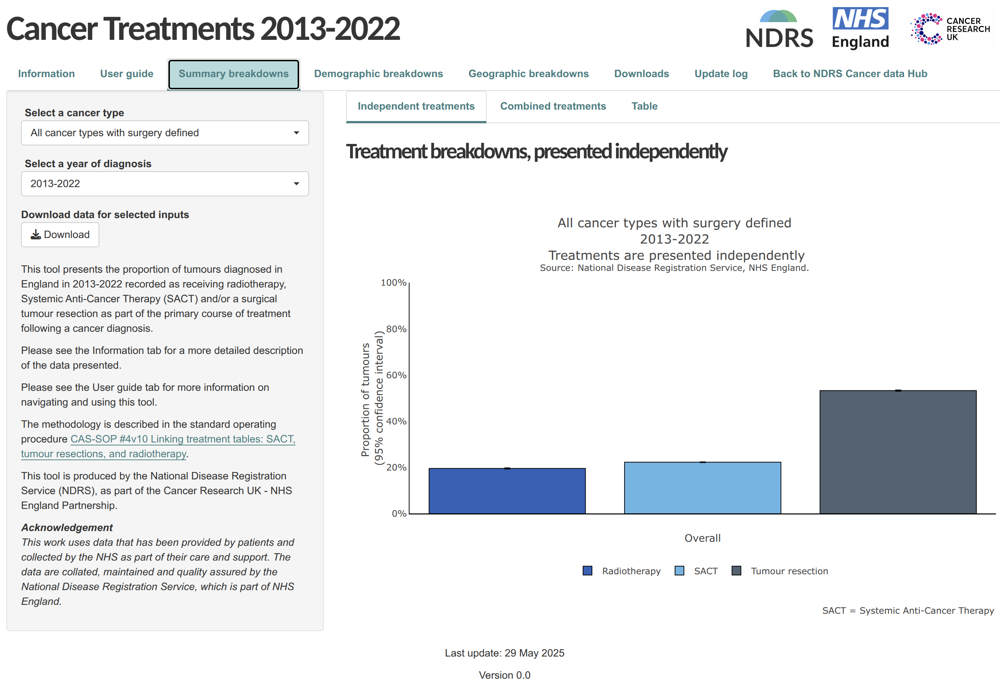
"Shiny app showing the percentage of tumours receiving radiotherapy, Systemic Anti-Cancer Therapy (SACT) and/or a surgical tumour resection as part of the primary course of treatment following diagnosis."
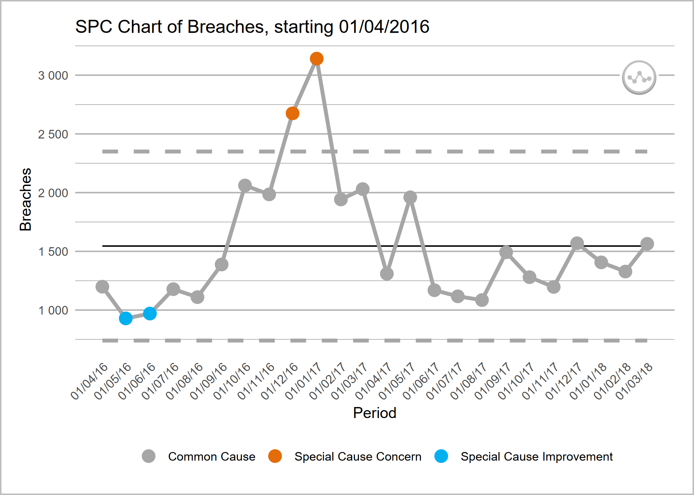
NHSRplotthedots is an R package that simplifies the creation and automation of statistical process control (SPC) charts for KPIs. It helps analysts and teams move beyond static KPIs to understand true performance variation and identify opportunities for improvement.
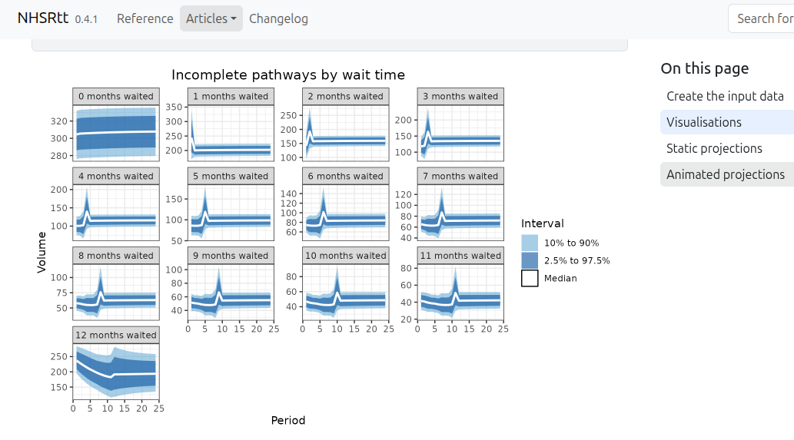
NHSRtt is an R package, providing analysts with a simple stock-and-flow modelling framework for NHS referral-to-treatment (RTT) data. The tool supports scenario testing and planning for elective care pathways by translating patient flow data into projections of waiting list size and treatment demand.
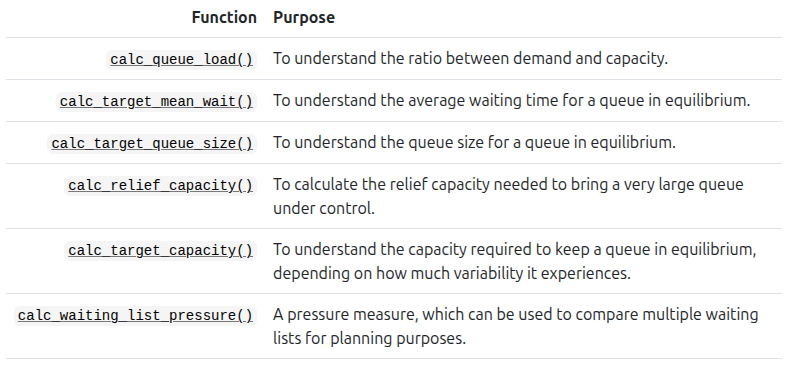
NHSRwaitinglist is an R package implementing the waiting list management approach described in the paper Understanding Waiting Lists Pressures by Fong et al (2022).
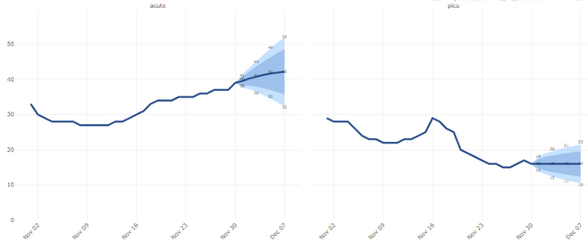
Nowcasting uses real-time data and statistical modelling to estimate what is happening right now — before all information has fully arrived. In healthcare, it helps anticipate short-term trends such as hospital admissions or bed occupancy, enabling faster, data-informed operational decisions even when reporting delays or incomplete data make the current situation unclear.
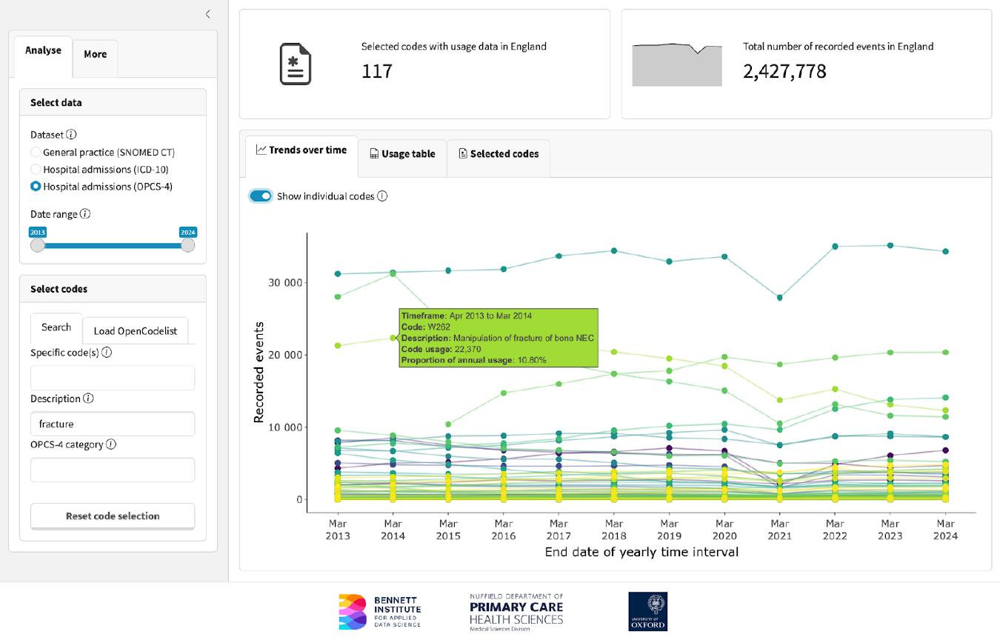
The opencodecounts R package provides easy access to yearly summaries of clinical code usage in England. The package makes NHS England's published datasets available in R and an interactive online tool, covering SNOMED CT codes in primary care and ICD-10/OPCS-4 codes in secondary care.
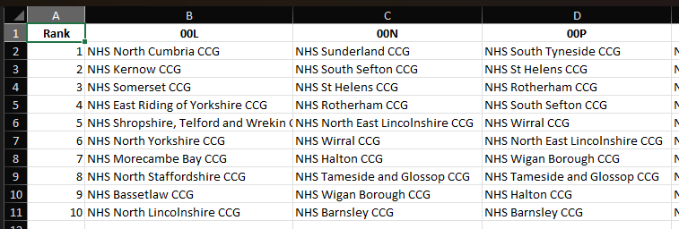
An NHS England R script that uses characteristics like size, demographics, deprivation, and ethnicity to calculate lists of ten statistically similar CCGs.
Julia
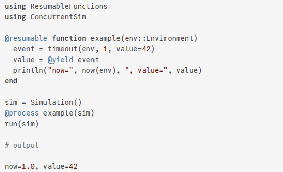
A discrete event process oriented simulation framework (formerly SimJulia) written in Julia inspired by the Python library SimPy. It is helpful for building simulations of pathways and services, allowing 'what-if' questions to be tested.
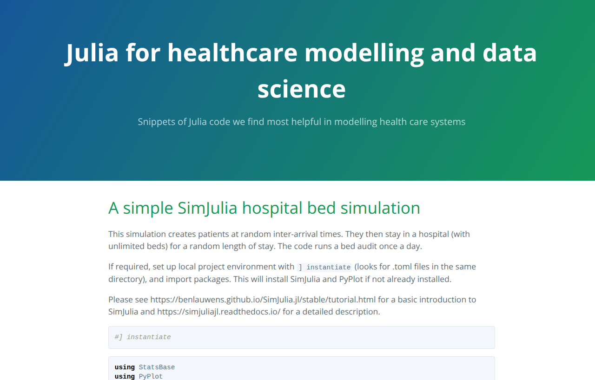
Website with snippets of Julia code helpful for modelling health care systems.
PowerBI
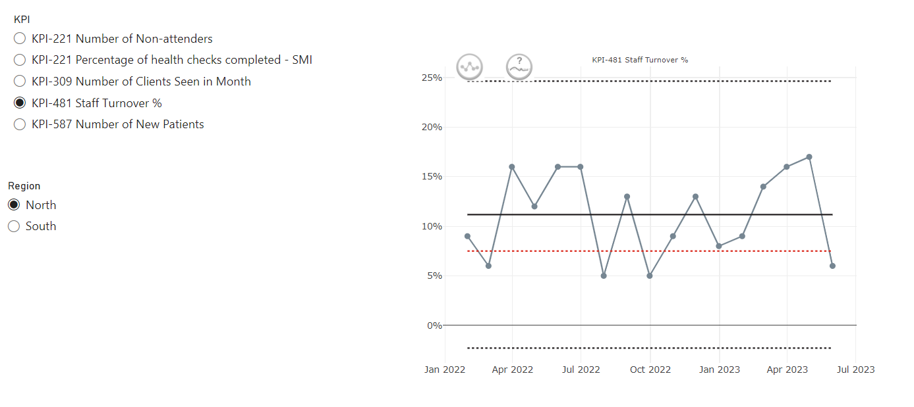
This custom PowerBI visual (based on NHSRplotthedots) simplifies the creation and automation of statistical process control (SPC) charts for KPIs. It helps analysts and teams move beyond static KPIs to understand true performance variation and identify opportunities for improvement, producing R-backed visuals within the setting of PowerBI and integrating with PowerBIs data model and filters.
A library of healthcare-specific data visualisations, developed in Vega. Hyper customisable interactive charts and widgets that you own, which can be implemented in Power BI using Deneb, or Python using Altair.
Nowcasting uses real-time data and statistical modelling to estimate what is happening right now — before all information has fully arrived. In healthcare, it helps anticipate short-term trends such as hospital admissions or bed occupancy, enabling faster, data-informed operational decisions even when reporting delays or incomplete data make the current situation unclear.
Excel
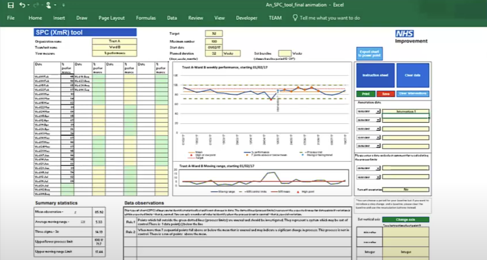
These Excel templates support the creation of statistical process control (SPC) charts adhering to the making data count rules and style. SPC charts are a good alternative to red-amber-green (RAG) rated reporting of metrics, helping to build a more informed picture of a metric's performance over time and spot signals of improvement or deterioration.
Tableau
Desktop / Web end‑user applications
These are tools that are primarily used via a graphical interface or web browser, so people can work with them directly without needing to edit or run code.
In this atlas, anything you would normally treat as “code you work on” (e.g., R Shiny apps distributed with their source code) should be listed under their underlying language (e.g. R).
‘Meta’ Tools - Things to Help You Do Analytics Better
Other
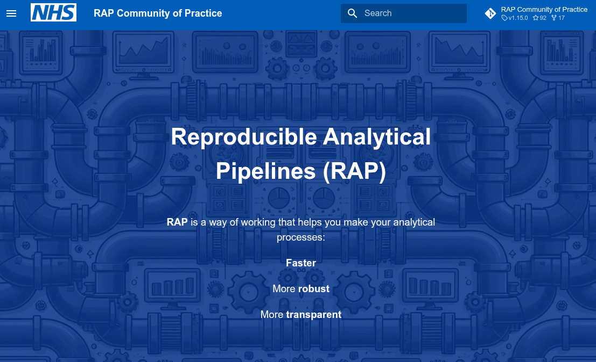
The NHS RAP Community of Practice, maintained by NHS England, supports analysts and teams in adopting reproducible analytical pipeline (RAP) methods.
R package (built using C++ and Rcpp) implementing the definition of 'avoidable' emergency department attendances, as per the School of Health and Related Research at the University of Sheffield's definition, with reference to NHS Digital's SNOMED/HES coding.